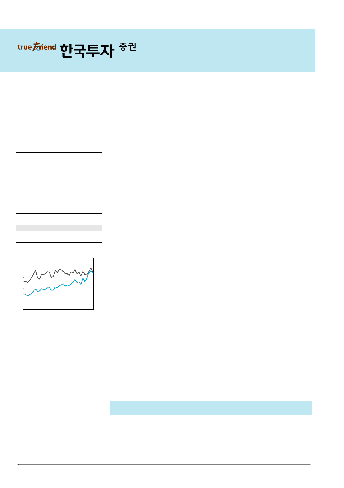

기업 Note
2017.6.22
엔씨소프트(036570)
매수(유지)
또 다시 과대평가된 커뮤니티 반응
목표주가: 560,000원(유지)
Stock Data
KOSPI(6/21)
주가(6/21)
시가총액(십억원)
발행주식수(백만)
52주 최고/최저가(원)
일평균거래대금(6개월, 백만원)
유동주식비율/외국인지분율(%)
주요주주(%) 김택진 외 7 인
국민연금
2,358
365,000
8,004
22
416,000/218,000
82,057
84.8/34.6
12.0
11.0
주가상승률
절대주가(%)
상대주가(%p)
1개월
(3.8)
(6.8)
6개월
41.7
26.1
12개월
62.2
43.3
12MF PER 추이
(배)
20
12MF PER (좌)
엔씨소프트 주가 (우)
(천원)
500
450
400
350
15
300
250
10
200
150
5
100
50
0
0
Jul-14
Jul-15
Jul-16
자료: WISEfn 컨센서스
커뮤니티 반응에 대한 우려는 기우
기존 출시된 기대작들과 마찬가지로 ‘리니지 M’에 대한 게임 커뮤니티의 반응은 부정적이
었다. 하지만 ‘리니지 RK’와 ‘리니지 레볼루션’의 사례를 고려했을 때 부정적인 Feedback
은 대부분 초기 이탈자의 의견으로 실제 매출액과의 연관성은 낮았다. 이탈의 주요 원인
은 그래픽에 대한 불만으로 파악되는데 ‘리니지M’의 기존 방향성이 그래픽의 경쟁력이 아
닌 기존 리니지 이용자 유입이라는 점을 감안할 때 커뮤니티 반응에 대한 우려는 기우라
고 판단한다. 이를 반영하듯 서버 점검 전까지 ‘원활’ 상태를 유지했던 서버들은 Peak
Time을 기점으로 ‘혼잡’으로 변경됐다. 실제 게임을 플레이하는 이용자들의 게임 내
Feedback도 긍정적인 것으로 파악된다. 리니지의 장점인 커뮤니티 활동이 기존 이용자들
을 중심으로 원활히 진행되고 있으며 향후 탑재될 거래소 기능을 대비한 특정 아이템에
대한 Farming(게임 내에서 특정 아이템 획득을 위한 반복된 사냥)을 이미 시작했다.
iOS버전 출시는 +α 요인
iOS 출시는 ‘리니지M’ 매출 극대화에 긍정적이다. 우리는 ‘리니지 M’의 핵심 흥행 요소인
거래소 탑재를 위해 iOS 출시를 포기해도 충분한 주가 Upside가 존재한다고 가정했다.
환금성 요인을 제외한 ‘리니지M’의 iOS 매출 기여가 극히 제한적일 것으로 판단했기 때문
이다. 하지만 거래소 및 개인 간 거래가 제외되었음에도 불구하고 ‘리니지M’의 iOS 매출
순위는 ‘리니지 레볼루션’ 보다 빠른 시간 내에 1위를 기록했다. 즉, iOS 이용자들은 환금
성 요인 유무 여부에 관계없이 게임 내 경쟁력 강화를 위해 아이템을 구매하고 있다. 거래
소 활용을 원하는 고 ARPPU이용자들의 경우 향후 출시될 성인용 안드로이드 클라이언트
로 이동할 수 있기 때문에 iOS 매출은 거래소 출시 시기 전까지 안정적인 수준을 유지할
전망이다. 향후 매출 감소가 불가피하다고 가정해도 iOS 출시에 대한 기대감이 낮았기 때
문에 현 시점의 매출 수준은 기대 이상의 매출 창출을 견인할 수 있는 +α 요인이다.
김성은 3276-6158
askim@truefriend.com
거래소 기능이 초기 매출에 미치는 영향은 제한적
게임 출시 초기의 경우 이용자들의 주요 관심사는 End-Contents를 즐기기 위한 캐릭터
빠른 레벨업이다. 따라서 거래소 기능 추가 시기 지연이 초기 매출에 미치는 영향은 극히
제한적이라고 판단한다. 또한 엔씨소프트가 거래소 기능 출시 시기(7월 5일전)를 구체적
으로 공개했기 때문에 이에 따른 우려로 아이템 구매 의지가 낮아지지 않을 전망이다. 현
재 저레벨 지역에서 획득 가능한 아이템들은 향후 희귀 아이템 제작을 위한 재료들로 출
시 초기 시점에서의 가치는 높지 않다. 게임 내 부 축적을 위한 거래소 기능이 백분 부각
될 수 있는 시점이 아니라는 의미이다.
매출액 영업이익 순이익
EPS 증감률 EBITDA PER EV/EBITDA PBR ROE DY
(십억원) (십억원) (십억원)
(원) (%) (십억원)
(x)
(x)
(x) (%) (%)
2015A
838
237
165 7,633 (33.7)
272 27.9 13.7 2.6 10.6 1.3
2016A
984
329
272 12,783 67.5
361 19.4 12.3 2.7 14.9 1.5
2017F
1,688
606
475 22,371 75.0
636 16.3 10.4 3.3 23.0 1.5
2018F
2,022
778
616 29,023 29.7
808 12.6
7.7 2.8 24.9 1.8
2019F
2,373 1,039
823 38,748 33.5 1,071 9.4
5.3 2.3 27.1 2.2
주: 순이익, EPS 등은 지배주주지분 기준